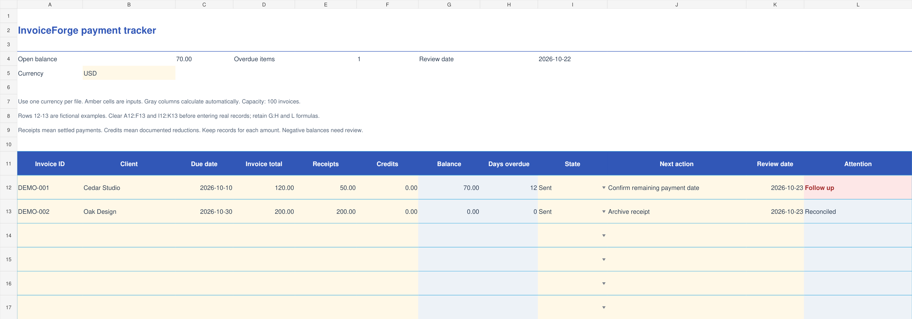
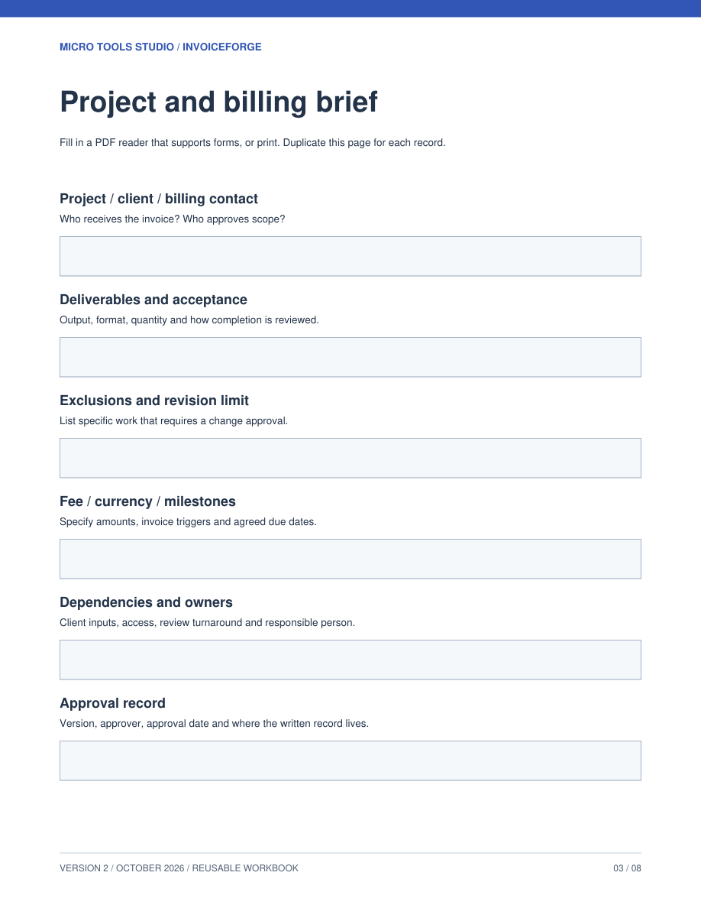

Make the request clear.
Agree the scope and billing contact. Check the invoice against the work before you send it.
FOR FREELANCE DESIGNERS, WRITERS & CONSULTANTS
Clear invoices. An accurate balance. The right follow-up.
One practical kit for freelancers who would rather be doing the work.
One-time purchase · Downloadable files · No subscription
A WORKFLOW YOU CAN ACTUALLY USE
Keep the details together. Check the numbers. Choose your next action without starting from a blank page.
Agree the scope and billing contact. Check the invoice against the work before you send it.
Record settled payments, see the remaining balance, and adapt a message to the situation.
Confirm the money arrived, record the reference, and close the invoice with confidence.
ACTUAL PRODUCT PREVIEW
The XLSX tracker calculates remaining balances and overdue days, with space for your follow-up date and action.

ACTUAL PRODUCT PREVIEW
An eight-page guide with a worked example and fillable records for scope, invoice checks and follow-up decisions.

SAMPLE MESSAGE
Start with the facts, adjust the tone, and send through your normal email app. You stay in control.
START WITH THE JOB IN FRONT OF YOU
For independent service businesses that need a useful working record without setting up a larger system.
DESIGNERS & DEVELOPERS
Record the invoice total and settled receipts. Keep the remaining balance clear when a client pays a deposit or part of a bill.
WRITERS & CONSULTANTS
Choose a review date, keep the next action with the invoice, and prepare a message with the current balance.
SOLO SERVICE BUSINESSES
Export balances and currency to CSV, save a review report, and keep a JSON backup you can restore later.
THE INVOICEFORGE COMPLETE KIT
A focused toolkit for managing your own invoices and follow-ups. Keep the files and use them for your business.
Best for solo freelancers, consultants and small service businesses handling a manageable invoice list.
Need team access, automatic reminders or bank reconciliation? This downloadable kit does not provide those features.
ZIP download after verified payment. No physical product.
Start in a desktop browser with the included workspace. Save JSON backups regularly; browser storage stays on your device. The optional XLSX and PDF companions need compatible apps. Core spreadsheet calculations were checked in Google Sheets; native Excel and Numbers checks remain pending. The browser workspace is the recommended starting point. No account required.
Yes. Create and print an invoice, draft a payment reminder, and use the browser follow-up list without buying the kit. The paid kit adds a standalone browser workspace, downloadable spreadsheet and PDF workflows, worked examples, records and reusable client messages.
After the payment is verified, a confirmation page gives you a 24-hour download link. Download and extract the ZIP, then open START_HERE.html. Save the ZIP and your order number. The site does not currently send a separate download email.
No. InvoiceForge helps you prepare invoices, records and messages. You send them yourself and confirm payments in your own provider or bank records.
Eligible card checkout and other methods can appear through PayPal. The options shown depend on your location, device, currency and PayPal eligibility.
Keep your order number and contact sean@microtoolsstudio.com. If confirmation is pending, use the check-status option before paying again. Read our refund policy.
It is a one-time digital download. It does not include bookkeeping, accounting advice, cloud syncing or a promise that a client will pay. You review and adapt the records for your own business.